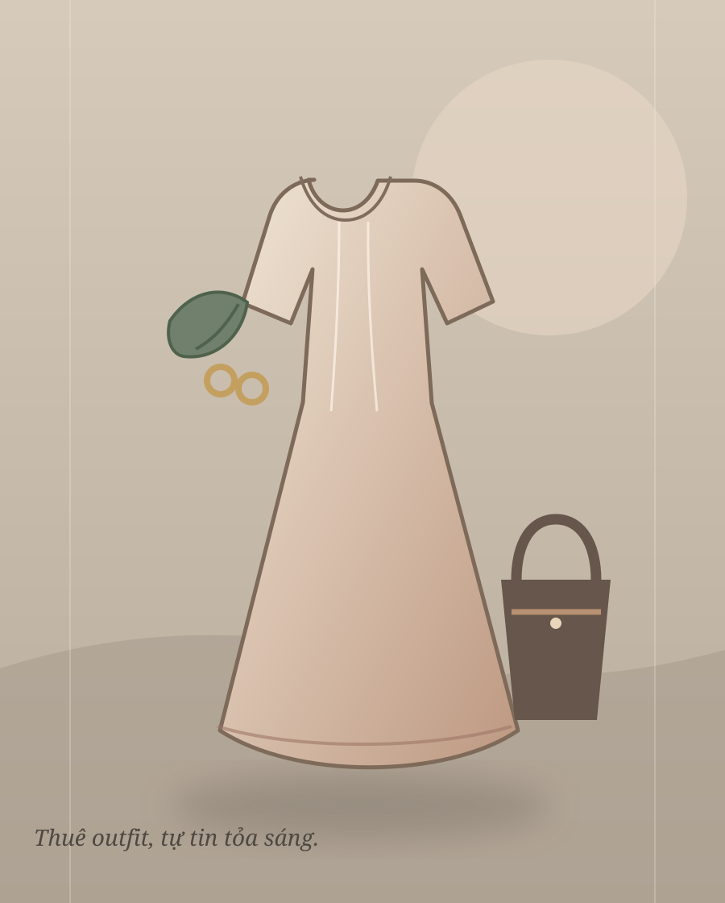
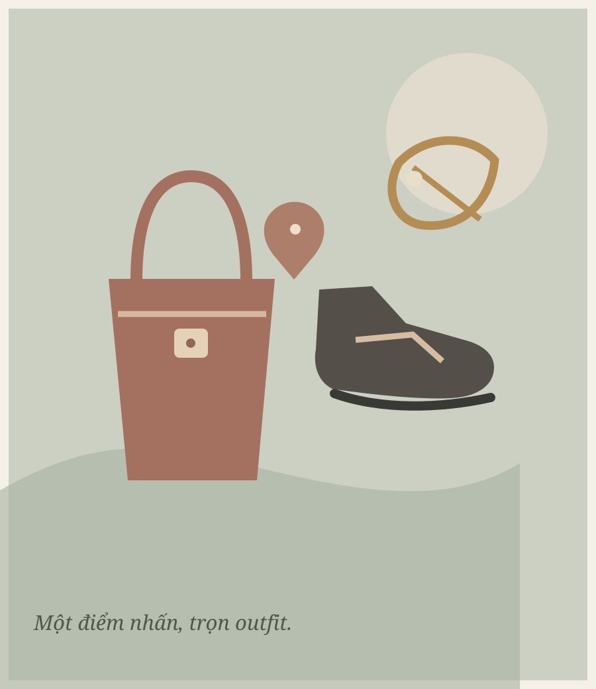

“Chỉ mặc
một vài lần.”
một vài lần.”
Mua mới cho tiệc, kỷ yếu hay chụp ảnh khiến chi phí tăng lên dù trang phục ít được sử dụng.
DỰ ÁN KHỞI NGHIỆP · NHÓM HKDN
Outfit cho những ngày đáng nhớ — chọn phong cách của bạn, không cần mua một bộ đồ chỉ mặc vài lần.
Khám phá RentMeDành cho sinh viên 18–24 tuổi tại TP.HCM

RentMe là dịch vụ cho thuê trang phục và phụ kiện dành cho sinh viên. Từ tiệc, chụp ảnh, kỷ yếu đến văn nghệ và sự kiện — dễ chọn outfit phù hợp, tiết kiệm hơn mua mới.
Dự án bắt đầu ở quy mô nhỏ, tập trung vào nhu cầu thực tế và khả năng chi tiêu của sinh viên.
Quyết định của nhóm ↗Thử nghiệm có kiểm soát, theo dõi lượt thuê và phản hồi trước khi mở rộng.
Nhu cầu có thật trong đời sống sinh viên. Rào cản nằm ở ngân sách, size, hình ảnh thực tế và sự tiện lợi khi thuê.
Mua mới cho tiệc, kỷ yếu hay chụp ảnh khiến chi phí tăng lên dù trang phục ít được sử dụng.
Tìm outfit hợp phong cách, ngân sách và vóc dáng có thể mất thời gian.
1Khách hàng muốn hình ảnh thực tế, quy trình thuê rõ ràng và nhận đồ thuận tiện.
2Mua mới · mượn người quen · thuê tại cửa hàng · mặc lại đồ sẵn có · mua đồ second-hand
Sinh viên 18–24 tuổi tại TP.HCM — thường tham gia tiệc, sự kiện, văn nghệ, kỷ yếu và chụp ảnh; quan tâm phong cách cá nhân, dùng TikTok, Facebook, Instagram và ưu tiên giá hợp lý, nhiều mẫu, dễ thuê.
Mẫu mã trẻ trung, giá định hướng phù hợp sinh viên, có thể chọn lẻ hoặc phối sẵn thành combo.

TỦ ĐỒ RENTME✳ Combo dự kiến: đi tiệc · kỷ yếu · áo dài · văn nghệ/sự kiện · outfit + phụ kiện
Thuê thay vì mua bộ đồ chỉ mặc vài lần.
Nhiều lựa chọn theo từng dịp đặc biệt.
Combo trang phục và phụ kiện đi cùng nhau.
Số liệu và kết luận nghiên cứu được trích từ kế hoạch nhóm; chúng cung cấp bối cảnh cho kênh tiếp cận, không phải kết quả của RentMe.
Tăng trưởng 25,5% so với năm trước.
Nguồn: Cục TMĐT & Kinh tế số – Bộ Công Thương, theo tài liệu nhóm.↗Theo báo cáo, TikTok nằm trong bộ nền tảng thiết yếu (“must-have”) của Gen Z tại Việt Nam.
Nguồn: Decision Lab, Connected Consumer Q2/2025.✳Tăng 34,75% so với năm 2024.
Nguồn: Metric, theo tài liệu nhóm; gồm Shopee, TikTok Shop, Lazada, Tiki.⌁Hàm ý của nhóm: TikTok, Facebook, video ngắn và livestream có thể phù hợp để giới thiệu outfit đến khách hàng trẻ. Nhóm dự kiến thử nghiệm ở quy mô nhỏ và theo dõi phản hồi về mẫu, size, giá và chất lượng.
Nhận định về khoảng trống là phân tích của nhóm, không phải tuyên bố của đối thủ.
| Đối thủ | Sản phẩm & khách hàng | Thế mạnh được nêu | Hướng khác biệt RentMe |
|---|---|---|---|
| Kim Khôi Shop | Áo dài, vest, đồ biểu diễn, trang phục theo concept, váy dự tiệc và phụ kiện; phục vụ nhu cầu sự kiện, biểu diễn, chụp ảnh và dịp đặc biệt. | Có cửa hàng tại TP.HCM, danh mục rộng; shop cho biết có hơn 15 năm kinh nghiệm. | Tập trung sinh viên, mẫu trẻ trung và combo đi tiệc, kỷ yếu, văn nghệ. Xem nguồn ↗ |
| Rent By TD | Đầm dự tiệc, dạ hội, áo dài; phục vụ khách đi tiệc, đám cưới, dạ hội và sự kiện. | Tài liệu ghi website có hơn 360 mẫu, nhiều size, hỗ trợ giao hàng toàn quốc; có quy trình thuê trực tuyến, hỗ trợ đổi size và vệ sinh. | Nhiều nhóm sự kiện cho sinh viên và combo, thay vì tập trung chủ yếu vào đầm tiệc. Xem nguồn ↗ |
| Hisa Closet | Đầm váy, áo dài, yếm và outfit cho tiệc, chụp ảnh, lễ hội; hướng đến khách hàng trẻ. | Tài liệu ghi hơn 360 mẫu, nhiều size từ minisize đến bigsize và hỗ trợ giao hàng toàn quốc. | Tập trung sinh viên, combo theo sự kiện và trải nghiệm chọn outfit đơn giản. Xem nguồn ↗ |
Các con số về danh mục và thời gian hoạt động là thông tin được ghi trong tài liệu nhóm, truy cập ngày 02/10/2026.
Hisa Closet cùng tiếp cận khách trẻ, có hơn 360 mẫu theo tài liệu, nhiều size và hỗ trợ thuê online/giao hàng. RentMe định hướng khác biệt bằng giá phù hợp sinh viên, combo theo sự kiện, ảnh thực tế, bảng size rõ và tư vấn gần gũi.
Tóm lược SWOT và Năm áp lực cạnh tranh theo phân tích của nhóm.
Tập trung vào sinh viên; định hướng giá phù hợp; có trang phục, phụ kiện và combo theo nhu cầu.
Tác động: ngách rõ giúp thông điệp và danh mục khởi đầu tập trung hơn.Vốn và kinh nghiệm vận hành còn hạn chế; chưa có cửa hàng vật lý hay nhân sự chuyên trách; kho mẫu và size ban đầu khó đa dạng như đối thủ lớn.
Tác động: cần chọn hàng cẩn trọng, theo dõi vệ sinh, bảo quản và thất lạc.Mạng xã hội và thương mại điện tử tạo điều kiện tiếp cận khách hàng mà chưa cần đầu tư cửa hàng lớn.
Tác động: video ngắn và nội dung phối đồ có thể giúp thử kênh với quy mô nhỏ.Đối thủ nhiều mẫu, có kinh nghiệm; xu hướng thay đổi nhanh; mô hình dễ bị sao chép.
Tác động: khác biệt bằng trải nghiệm, combo và sự tiện lợi thay vì chỉ giảm giá.Lợi thế cốt lõiTập trung chuyên biệt vào sinh viên có ngân sách hạn chế; nhóm cho biết am hiểu nhu cầu, phong cách và khả năng chi tiêu của họ.
Điểm cần kiểm soátVốn và kinh nghiệm vận hành kho, vệ sinh, bảo quản, hư hỏng; chưa có cửa hàng vật lý/nhân sự chuyên trách; kho ban đầu ít mẫu và size hơn đối thủ.
Cơ hội & ứng phóDùng TikTok/Facebook và nội dung video để tiếp cận mà chưa cần cửa hàng lớn; có thể mở rộng phụ kiện và tư vấn phối đồ. Bắt đầu vừa nguồn lực, ưu tiên mẫu có nhu cầu, làm combo và theo dõi phản hồi để điều chỉnh kho, chi phí.
Thách thứcCạnh tranh với cửa hàng có sẵn sản phẩm, kinh nghiệm và khách hàng; xu hướng thay đổi nhanh, mô hình có thể bị sao chép.
Thị trường được nhóm nhận định hấp dẫn ở mức trung bình–khá, đáng tham gia nếu chọn đúng phân khúc ngách.
Nhiều shop có kho mẫu và kinh nghiệm: Kim Khôi Shop cho biết hơn 15 năm hoạt động; Hisa Closet có hơn 360 mẫu theo tài liệu.
Rào cản thấp; có thể bắt đầu bán/cho thuê qua TikTok và Facebook.
Nguồn từ xưởng may, chợ sỉ và shop thiết kế khá phong phú; lượng nhập ban đầu nhỏ nên chưa có ưu thế đàm phán giá sỉ.
Sinh viên nhạy cảm về giá, dễ so sánh mẫu trên mạng xã hội và có thể đổi shop nếu giá cao hoặc thủ tục cọc phức tạp.
Mua đồ giá rẻ trên sàn (Shopee, Shein, TikTok Shop), mượn bạn bè hoặc mua đồ second-hand/thrift.
Phản hồi từ nghiên cứu thị trường, SWOT và Porter giúp nhóm thu hẹp khách hàng và thay đổi cách cạnh tranh.
Đặt cọc tiền mặt và phí vận chuyển là rào cản; khách cũng muốn có sẵn gợi ý phối trang phục với phụ kiện.
↗Khách xem mẫu online, chọn size và dịp; nhóm chuẩn bị đồ, giao nhận tại trường, rồi vệ sinh và bảo quản sau khi trả.
Khám phá
Xem mẫu và video phối đồ
Chọn & đặt thuê
Chọn món lẻ hoặc combo, size phù hợp
Nhận tại Campus
Giao nhận trực tiếp ở cơ sở trường
Hoàn trả
Kiểm tra, vệ sinh và bảo quản
Ước tính trung bình các tháng đầu vận hành.
Doanh thu trừ toàn bộ chi phí biến đổi.
Sau chi phí biến đổi và cố định.
4,91 tháng (khoảng 5), theo phép tính đơn giản.
| Khoản chi | Số tiền |
|---|---|
| Trang phục ban đầu | 9.000.000 |
| Nhận diện thương hiệu | 1.000.000 |
| Phụ kiện đi kèm | 1.500.000 |
| Thiết bị & dụng cụ bảo quản | 2.000.000 |
| Quảng cáo thâm nhập ban đầu | 1.500.000 |
| Tổng đầu tư ban đầu | 15.000.000 |
| Khoản mục | Số tiền |
|---|---|
| Chi phí biến đổi | 1.745.000 |
| Chi phí cố định | 2.100.000 |
| Số dư đảm phí | 5.155.000 |
| Lợi nhuận hoạt động dự kiến | 3.055.000 |
Biến đổi gồm giặt ủi, bao bì, hỗ trợ giao nhận Campus và dự phòng hư hỏng nhỏ.
| Dịch vụ | Giá / đơn vị | Số lượng | Doanh thu |
|---|---|---|---|
| Thuê lẻ trang phục | 120.000 | 25 lượt | 3.000.000 |
| Combo trang phục + phụ kiện | 180.000 | 20 combo | 3.600.000 |
| Phụ kiện lẻ & dịch vụ | 30.000 | 10 lượt | 300.000 |
| Tổng dự kiến | 55 lượt | 6.900.000 | |
Giá thuê lẻ dựa trên mức chấp nhận 100.000–150.000 VNĐ theo khảo sát được nêu trong tài liệu; tỷ trọng 25 lượt là giả định. Combo 180.000 VNĐ được nhóm giả định chiếm khoảng 40% lượng khách; tài liệu ghi mức chi trả khảo sát 100.000–200.000 VNĐ và tham chiếu giá một số đối thủ 200.000–350.000 VNĐ. Dịch vụ kèm theo gồm giặt ủi nhanh, thuê phụ kiện lẻ hoặc giao nhận.
| Khoản chi | Dự toán | Căn cứ trong tài liệu |
|---|---|---|
| Trang phục ban đầu | 9.000.000 | Khoảng 30–40 mẫu; giá sỉ tham khảo |
| Nhận diện thương hiệu | 1.000.000 | Thiết kế logo, banner, tem/tag, mẫu đăng bài |
| Phụ kiện đi kèm | 1.500.000 | Túi xách, trang sức, kẹp tóc, cà vạt |
| Thiết bị & bảo quản | 2.000.000 | Bàn ủi hơi nước, sào, móc, túi bảo vệ/giao hàng |
| Quảng cáo khởi đầu | 1.500.000 | Thử nghiệm TikTok và Facebook tháng đầu |
| Tổng chi phí khởi đầu | 15.000.000 | VNĐ |
| Khoản mục | Cách tính | Chi phí |
|---|---|---|
| Giặt ủi & bảo quản | 15.000 × 55 lượt | 825.000 |
| Bao bì & vật tư | 5.000 × 55 lượt | 275.000 |
| Hỗ trợ giao nhận tại trường | 10.000 × 30 đơn | 300.000 |
| Dự phòng hư hỏng nhỏ | 5% × 6.900.000 | 345.000 |
| Tổng chi phí biến đổi | 1.745.000 | |
Theo báo cáo, tổng chi phí biến đổi bằng khoảng 25,3% doanh thu tháng dự kiến.
| Khoản mục | Dự toán |
|---|---|
| Marketing & quảng cáo duy trì | 800.000 |
| Internet & nền tảng vận hành | 300.000 |
| Phụ cấp vận hành nhóm | 1.000.000 |
| Tổng chi phí cố định | 2.100.000 |
Số dư đảm phí = 6.900.000 − 1.745.000 = 5.155.000 VNĐ/tháng. Lợi nhuận hoạt động dự kiến = 5.155.000 − 2.100.000 = 3.055.000 VNĐ/tháng.
Đơn giá bình quân: 125.455 VNĐ/lượt · chi phí biến đổi bình quân: 31.727 VNĐ/lượt.
2.100.000 ÷ (125.455 − 31.727) = 2.100.000 ÷ 93.728 = 22,4; làm tròn lên là 23 lượt thuê/tháng, tương đương doanh thu khoảng 2.885.000 VNĐ/tháng.
15.000.000 ÷ 3.055.000 ≈ 4,91 tháng (khoảng 5 tháng), theo phép tính đơn giản của nhóm và với giả định lợi nhuận hoạt động dương.
Tài liệu nêu khảo sát nhu cầu sinh viên ghi nhận tần suất tham gia sự kiện trung bình 1–2 lần/kỳ, nhưng không nêu cỡ mẫu hay bảng kết quả. Các dải lượt thuê cũng dựa trên giả định quay vòng kho khoảng 30–40 bộ với ngân sách 9.000.000 VNĐ. Riêng bảng doanh thu tháng dùng kịch bản trung bình 55 lượt. Đây là các giả định theo ngữ cảnh riêng của báo cáo, chưa phải dữ liệu vận hành.
Ghi chú về mức độ chắc chắn. Phần tóm tắt tài liệu ghi doanh thu và lợi nhuận cụ thể “chưa chốt” ở giai đoạn đầu. Bảng tài chính ở phần sau đưa ra kịch bản dự báo theo giả định nhóm. Mức 23 lượt hòa vốn dựa trên đơn giá và chi phí biến đổi bình quân gộp nêu trong báo cáo; kết quả thực tế cần được kiểm chứng khi vận hành.
Những điểm nhóm cần theo dõi và cách ứng phó đã nêu trong kế hoạch.
Nhắm quảng cáo TikTok/Facebook quanh trường; thử ưu đãi đi nhóm 2–3 người giảm 10–15%, miễn phí giao nhận tại trường và hợp tác với câu lạc bộ/đội nhóm.
Nếu khách thấy giá cao, nhóm dự kiến thử combo cơ bản 130.000–150.000 VNĐ bằng cách giảm phụ kiện cao cấp; cũng cân nhắc tặng voucher giặt ủi hoặc miễn cọc cho sinh viên có Thẻ sinh viên/VNeID chính chủ. Đây là phương án giả định, chưa phải bảng giá/chính sách chốt.
Tự giặt ủi các mẫu đơn giản bằng thiết bị cá nhân để giảm chi phí giặt ngoài; mua vật tư số lượng lớn để nhận giá sỉ và theo dõi dự phòng sửa chữa, thất lạc.
Cần bảng size rõ, hình ảnh thực tế và quy trình thuê minh bạch để xây dựng niềm tin trực tuyến.
Trang phục bẩn, hư hỏng hoặc thất lạc · khó quản lý size và số lượng · chi phí vệ sinh, bảo quản, sửa chữa · xu hướng thay đổi nhanh · cạnh tranh và niềm tin khi bán trực tuyến.
Nhóm quyết định tiếp tục RentMe: bắt đầu phù hợp với nguồn vốn dự kiến 15 triệu đồng, ưu tiên combo theo sự kiện, cọc linh hoạt và giao nhận tại Campus; sau đó theo dõi phản hồi trước khi mở rộng.
Nguyễn Thị Phương Yến MSSV 24030032
Võ Thị Điểm MSSV 24030011
Phùng Thị Ngọc Như MSSV 24030317
Ngô Quang Thịnh MSSV 24030322
Danh mục được giữ theo tài liệu nguồn. Một số liên kết trong báo cáo gốc có thể chưa khớp tên nguồn; vui lòng đối chiếu trước khi sử dụng học thuật.
Statista — Apparel Renting: Worldwide Market Forecast. Truy cập 02/10/2026.
Mở nguồn ↗Grand View Research — Online Clothing Rental Market Size, Share & Trends Analysis Report. Tài liệu ghi truy cập 02/10/2026.
Mở nguồn ↗McKinsey & Company — The State of Fashion 2024 / 2025: Rewiring the Fashion Value Chain. Liên kết trong tài liệu gốc trỏ đến GSO.
Liên kết theo tài liệu ↗Kim Khôi Shop. Truy cập 02/10/2026.
Mở website ↗Rent By TD. Truy cập 02/10/2026.
Mở website ↗Hisa Closet. Truy cập 02/10/2026.
Mở website ↗Cục Thương mại điện tử và Kinh tế số – Bộ Công Thương; Decision Lab, Connected Consumer Q2/2025; Metric. Số liệu và ngày truy cập 02/10/2026 được dẫn trong nội dung báo cáo; báo cáo không cung cấp URL trực tiếp.
Nguồn ghi trong tài liệu